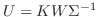
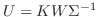

Next: Bibliography Up: A Proposed Mode-Solver: Assessment Previous: A Proposed Mode-Solver: Assessment
A total of 20 parameter states were tested with 2 trials for each state. The stimuli were each 1000 samples long, with 4 channels of data. The two parameters that varied were the damping regimes and number of modes in the stimulus.
The stimuli were grouped by the magnitudes of their poles into 10 ranges varying from 0-10%, 10-20%, 20-30%, and so on. The stimuli were further divided into 2 groups: one which exhibited 24 modes, the other which exhibited 28. The mode solver always attempted to find 24 eigenfrequencies.
The resulting eigenvalue sets were plotted against each other on the complex plane for each trial. Overall, the results suggest the mode solver performs better at finding modes which are less damped, which is fairly consistent with the findings of others. [5] [9] [17] [14]
The mode solver was also asked to plot the mode shapes as complex contours. Since the stimulus model did not explicitly specify these, they cannot be verified against any data. They just look pretty.
N.B., this algorithm does not suffer from the negative effects of mean-subtraction as referenced in [5], and above in section 1.8. Our method subtracts the mean of the entire data set from each point in the data set, then it breaks the entire data set into smaller matrices of length  , spaced one sample apart, and proceeds with the DMD on each of those blocks. therefore, each submatrix is not re-centered, but rather permitted to drift on timescales much larger than
, spaced one sample apart, and proceeds with the DMD on each of those blocks. therefore, each submatrix is not re-centered, but rather permitted to drift on timescales much larger than  .
.
Therefore the frequency-domain distortions associated with the DFT, i.e. arranging the poles at evenly spaced intervals around the unit circle, will not occur. This technique's behavior, like that of DMD--and presumably other least-squares prediction methods--converges on DFT-like behavior as the time-series order,  , approaches the time-series length of dataset,
, approaches the time-series length of dataset,  . Thus there appears to be a compromise between the number of modes this type of system can find, and the accuracy. Since we do not perform mean-subtraction across column vectors of , this is perhaps another reason to use wider, rather than longer, datasets. However, this is just speculation at the moment.
. Thus there appears to be a compromise between the number of modes this type of system can find, and the accuracy. Since we do not perform mean-subtraction across column vectors of , this is perhaps another reason to use wider, rather than longer, datasets. However, this is just speculation at the moment.
Future tests will attempt to find the effects of increasing the number of channels. This will require a different implementation of the stimulus synthesizer. Other aspects of future work include verifying the forcing function estimation and mode shapes.
In the complex plots below, the stimulus poles are plotted in red, while the algorithm's 24 estimation poles are plotted in blue. The first block of stimuli had 24 modes, and the second block had 28. These plots are ordered by increasing polar magnitude (or decreasing damping).
The complex contour plots of the modes, which begin on page  of this chapter, describe the mode shapes as they are expressed across each of the four channels, for six samples (in time) each. The real contours are placed above the imaginary contours. Only block 1, trial 1, pass 1 is printed.
of this chapter, describe the mode shapes as they are expressed across each of the four channels, for six samples (in time) each. The real contours are placed above the imaginary contours. Only block 1, trial 1, pass 1 is printed.
![\begin{singlespace}
% latex2html id marker 1610\begin{figure}[h]
\includegraph...
...(above) block 1, trial 10, pass 1, modes 23 \& 24}
\end{figure}\end{singlespace}](img379.png)